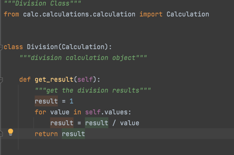

SOLID Object Oriented Design and calculator example
The most basic principle of programming is to pursue high cohesion and low coupling solutions and code module design. SOLID is the acronym of several important coding principles in object-oriented design and programming (OOD & OOP).
- S: The Single-Responsibility Principle (SRP)
- O: The Open/Closed Principle (OCP)
- L: The Liskov Substitution Principle (LSP)
- I: The Interface Segregation Principle (ISP)
- D: The Dependency-Inversion Principle (DIP)
Each encapsulated class implements a single function. Addition, subtraction, multiplication and division realize addition, subtraction, multiplication and division respectively. We don't encapsulate multiplication and division in the same class.
We can add functions to the subclass so that it has more functions than the parent class. However, we do not need to modify the parent class through subclasses. For example, we cannot modify the list method of the parent class in the addition class. In short, our program needs to be able to expand to a higher place, rather than repeatedly modifying the past code, which eventually leads to having to modify more things. This is definitely a vicious circle.
Just like computers, components can be easily extended. The hard disk is too small? Just change it to a big one. The monitor is not big enough? How about an 8K?
In our calculator program, if we need to add another log operation function in the future, we only need to expand a class responsible for log operation, and there is absolutely no need to modify the existing addition and subtraction multipliers.
What the parent class can do, the child class should also be able to do.
The subclasses in the calculator obviously support the list method of the parent class. In fact, this principle is conducive to the realization of the previous opening and closing principle and the maintenance and expansion of the program.
Interface separation principle. The functions implemented by the interface should be separated Classes should not rely on unwanted interfaces. In short, smaller and more specific thin interfaces are better than bulky fat interfaces. In the calculator, we have separated all functions as far as possible. Each addition, subtraction, multiplication and division has an interface.
Programs should rely on abstract interfaces rather than concrete implementations. High level modules should not rely on low-level modules, and both should rely on their abstraction. In short, it requires programming the abstraction rather than the implementation, which reduces the coupling between the customer and the implementation module. It is also an important idea to distinguish between process oriented programming and object-oriented programming.
In our calculator program, we have been programming abstract functions, which reflects the idea of object-oriented. We can't program the implementation, for example, to prepare the addition, subtraction, multiplication and division of all numbers from 1 to 100000. It's impossible.